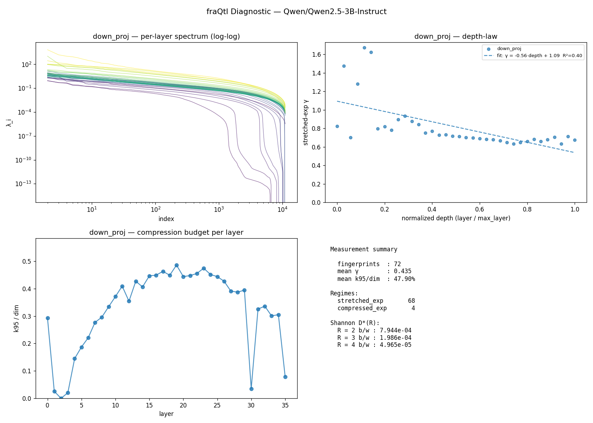

fraQtl Diagnostic — Qwen/Qwen2.5-3B-Instruct
v0.1.1 ·
36 layers ·
projections: down_proj, o_proj ·
251.6s on cuda
TL;DR
Normal transformer, limited compression headroom.- 68/72 layers fall in the standard stretched-exponential class (KWW). 4 in other regimes, 0 unfit.
- Effective rank is 48% of dim — most eigendirections are active; rank-based compression is tight.
- Stretched-exp γ is 0.44 — steep decay, fast compression recovery.
This is a measurement tool. For actual compression outcomes, visit https://fraqtl.ai
Measurement summary
| Metric | Value |
|---|
| Fingerprints (layer × projection) | 72 |
| Mean γ (stretched_exp regime, non-poor fits only) | 0.435 |
| Mean k95 / dim | 47.90% |
| Regimes | 68 stretched_exp, 4 compressed_exp |
| Fit quality | 70 good · 2 moderate · 0 poor |
Shannon rate-distortion ceiling D*(R)
geometric mean over all layers at each bit budget R. Theoretical floor, not a prediction —
the actual PPL a real compressor achieves depends on the recipe (sign correction, rank protection, etc.).
| R (b/w) | D*(R) geomean |
|---|
| 2 | 7.944e-04 |
| 3 | 1.986e-04 |
| 4 | 4.965e-05 |
Depth-law fits
| Projection | Slope | Intercept | R² | γ p10/p50/p90 | n |
|---|
| down_proj | -0.556 | 1.094 | 0.396 | 0.653 / 0.712 / 1.107 | 36 |
| o_proj | +0.091 | 0.128 | 0.152 | 0.072 / 0.172 / 0.273 | 36 |
Per-layer fingerprint (first 40)
| Layer | Proj | dim | γ | regime | fit |
k95 | k99 | knee |
|---|
| 0 | down_proj | 11008 | 0.823 | stretched_exp | good | 3229 | 5579 | 6939 |
| 0 | o_proj | 128 | 0.054 | stretched_exp | good | 87 | 113 | — |
| 1 | down_proj | 11008 | 1.476 | compressed_exp | good | 282 | 507 | 791 |
| 1 | o_proj | 128 | 0.119 | stretched_exp | good | 49 | 91 | — |
| 2 | down_proj | 11008 | 0.701 | stretched_exp | good | 1 | 1 | 1428 |
| 2 | o_proj | 128 | 0.171 | stretched_exp | good | 71 | 105 | — |
| 3 | down_proj | 11008 | 1.280 | compressed_exp | good | 226 | 1373 | 3453 |
| 3 | o_proj | 128 | 0.186 | stretched_exp | good | 75 | 110 | — |
| 4 | down_proj | 11008 | 1.672 | compressed_exp | moderate | 1597 | 2941 | 3860 |
| 4 | o_proj | 128 | 0.257 | stretched_exp | good | 85 | 115 | — |
| 5 | down_proj | 11008 | 1.624 | compressed_exp | moderate | 2058 | 3676 | 5265 |
| 5 | o_proj | 128 | 0.155 | stretched_exp | good | 72 | 101 | — |
| 6 | down_proj | 11008 | 0.798 | stretched_exp | good | 2433 | 4320 | 6257 |
| 6 | o_proj | 128 | 0.198 | stretched_exp | good | 86 | 115 | — |
| 7 | down_proj | 11008 | 0.818 | stretched_exp | good | 3048 | 5205 | 6693 |
| 7 | o_proj | 128 | 0.229 | stretched_exp | good | 85 | 115 | — |
| 8 | down_proj | 11008 | 0.782 | stretched_exp | good | 3257 | 5557 | 7439 |
| 8 | o_proj | 128 | 0.205 | stretched_exp | good | 83 | 113 | — |
| 9 | down_proj | 11008 | 0.894 | stretched_exp | good | 3675 | 5944 | 7171 |
| 9 | o_proj | 128 | 0.137 | stretched_exp | good | 90 | 116 | — |
| 10 | down_proj | 11008 | 0.934 | stretched_exp | good | 4082 | 6427 | 7324 |
| 10 | o_proj | 128 | 0.109 | stretched_exp | good | 80 | 112 | — |
| 11 | down_proj | 11008 | 0.878 | stretched_exp | good | 4504 | 6989 | 7666 |
| 11 | o_proj | 128 | 0.158 | stretched_exp | good | 80 | 112 | — |
| 12 | down_proj | 11008 | 0.842 | stretched_exp | good | 3899 | 6416 | 7477 |
| 12 | o_proj | 128 | 0.165 | stretched_exp | good | 74 | 110 | — |
| 13 | down_proj | 11008 | 0.751 | stretched_exp | good | 4699 | 7400 | 8256 |
| 13 | o_proj | 128 | 0.055 | stretched_exp | good | 78 | 111 | — |
| 14 | down_proj | 11008 | 0.769 | stretched_exp | good | 4472 | 7131 | 8044 |
| 14 | o_proj | 128 | 0.132 | stretched_exp | good | 82 | 113 | — |
| 15 | down_proj | 11008 | 0.729 | stretched_exp | good | 4916 | 7628 | 8391 |
| 15 | o_proj | 128 | 0.059 | stretched_exp | good | 82 | 113 | — |
| 16 | down_proj | 11008 | 0.733 | stretched_exp | good | 4943 | 7635 | 8355 |
| 16 | o_proj | 128 | 0.162 | stretched_exp | good | 99 | 121 | — |
| 17 | down_proj | 11008 | 0.716 | stretched_exp | good | 5097 | 7813 | 8517 |
| 17 | o_proj | 128 | 0.098 | stretched_exp | good | 65 | 102 | — |
| 18 | down_proj | 11008 | 0.712 | stretched_exp | good | 4940 | 7665 | 8418 |
| 18 | o_proj | 128 | 0.105 | stretched_exp | good | 79 | 111 | — |
| 19 | down_proj | 11008 | 0.701 | stretched_exp | good | 5348 | 8041 | 8594 |
| 19 | o_proj | 128 | 0.131 | stretched_exp | good | 73 | 110 | — |
Figures
(generate the PNG with report.to_png(path) — shown here if embedded)

About
This diagnostic measures information-theoretic compressibility from the input covariance
spectrum of each layer. It does not perform compression — it reports the ceiling and
shape. The fraQtl compression engine uses this fingerprint
plus additional engineering (sign correction, per-model calibration) to get closer to the
ceiling in practice.